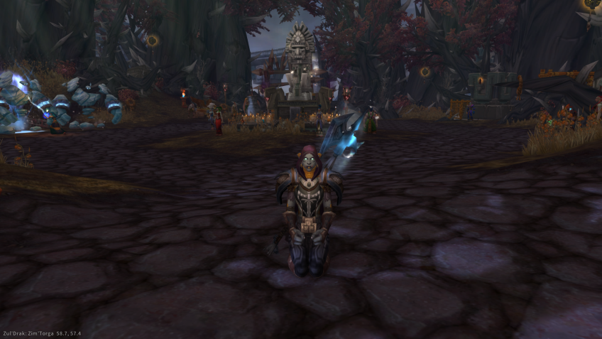

UM POUCO DE ZUL'DAZAR EM ZUL'DRAK

Viver em meio a elfos noturnos me afastou um pouco da minha origem. Os elfos da clareira da Lua e minha mãe adotiva Tramaal já haviam me dito que um dia conheceria minhas origens.
Contudo, me surpreendi (acredito que da mesma forma que eles) quando conheci este pequeno refúgio em Zul'drak.
Os irmãos que estavam neste pequeno acampamento em Nortúndria me contaram diversas histórias sobre os Loas os reis, principalmente sobre Dazar, o primeiro grande Zandalari.
Entretanto, todos se surpreenderam que os 'elfos da aliança', como eles se referiam, me acolheram, me cuidaram e me ensinaram as artes da natureza druídica.
Me sinto em casa. Mesmo que não conheça Zul'dazar, o que é um fato. Este pequeno grupo me fez mais Zandalari, mais Troll, que toda horda junta.